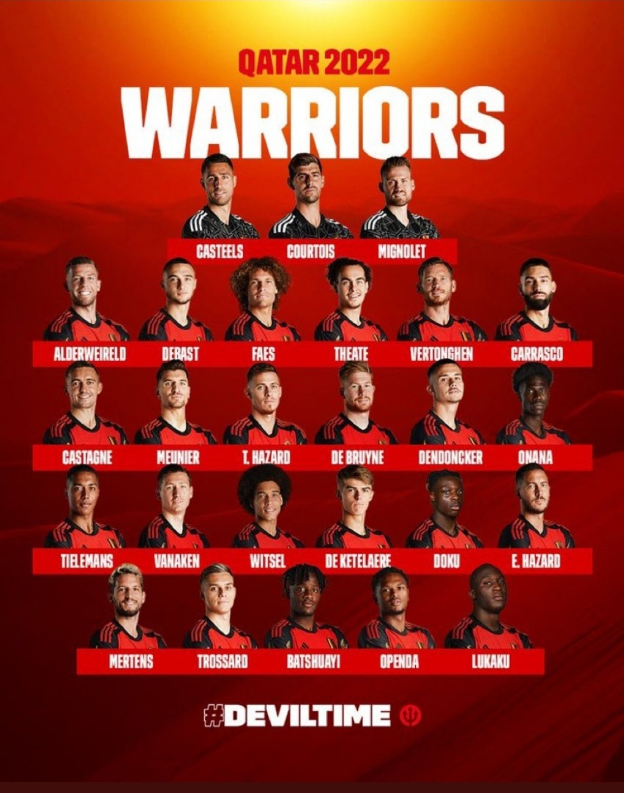
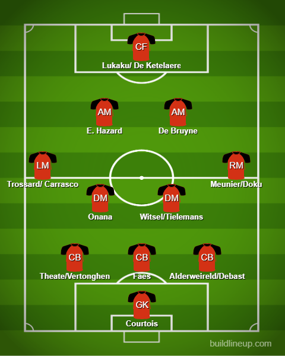

Squad Reaction - Belgium

Like I said in my team summary this is a decent squad in general and the one selected for this tournament is no different. This team has been forever named a dark horse but with the sheer quality they have I expected them to do really well at tournaments but they haven’t delivered as much as I thought. A 3rd place finish last time in the World Cup is good but not enough. Coming to the team, Courtois is unshakeable in goal. In defense, I would rather see Faes and Theate rather than Vertonghen and Alderweireld. Maybe one of the latter can be started for the experience. Vertonghen is injured however so it seems like Alderweireld will start mostly. Debast is a young CB also who could be OTW at 19. He played in Belgium’s last match(1-0 L to Netherlands). Onana is another OTW. Young CDM and a decent season for Everton. Let’s see how he develops along with either Witsel or Tielemans. On the left, it is between Castagne and Carrasco but I would trust Carrasco because of his work rate. Another one for the LM option could be Trossard who has had a great season for Brighton and deserves a run-out. On the right, Meunier is ever present and Doku is OTW who is young and can offer an attacking option. The 2 CAMs in this formation are 2 mainstays: De Bruyne and Eden Hazard. Up front is the conundrum. You have Lukaku who is the usual option or Batshuayi. You have Openda who is OTW: Young and promising and also De Ketelaere who has had a good start at AC Milan and can play either at CAM or ST.
The lineup:
